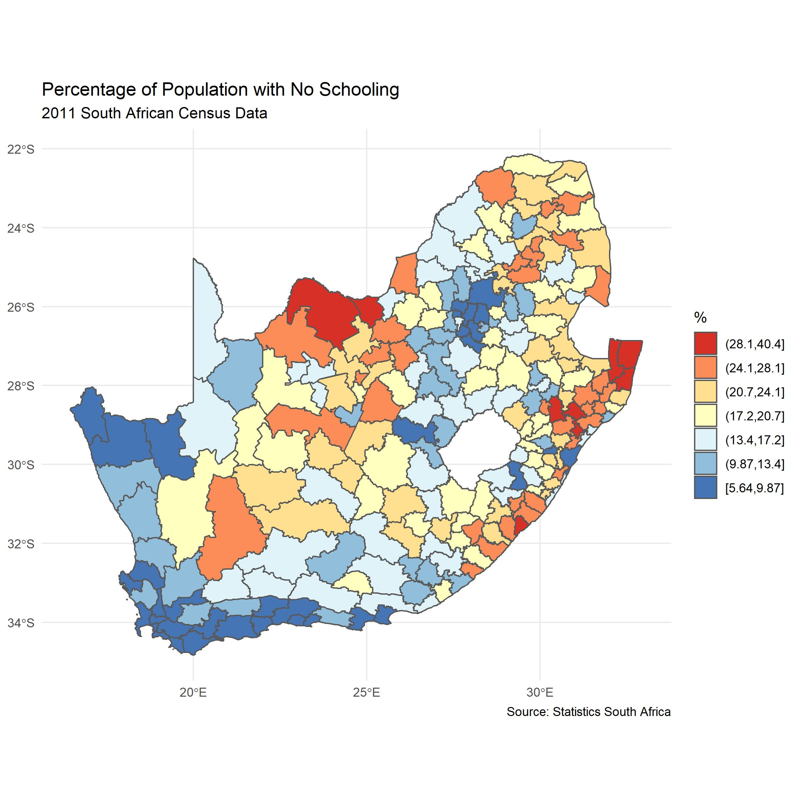

The Spatial Variable
Maps as Representations of Spatial Variation
Introduction
When we look at a map such as the following, which is a choropleth (or thematic) map showing the percentage of the population with no experience of schooling in each of the South African municipalities in 2011, one thing should be immediately obvious: the areas are shaded in a range of colours; they are not all the same. This is because the values that the colours represent vary across the country with some places having a greater percentage of their population without schooling than others. In this way, the map reveals and also visually represents the spatial (geographic) variation in the variable of interest. The map portrays the geographic pattern. Knowing something about the pattern might provide information about the processes that generated the pattern. At a minimum, it can reveal socio-spatial inequalities in an outcome of interest across a study region.

It is not surprising to find spatial variation. It is improbable that all the values would be the same. It is nearly always possible to find that some places have lower or higher values than others and to colour the map accordingly. Nevertheless, three characteristics of the spatial variation appear evident in the map.
Spatial heterogeneity. This is the idea that the values typical in one part of the map are not typical in another. To put it simply, some parts of the map are shaded in blue whereas others are in red and those parts seem neither randomly nor regularly distributed because of…
Spatial clustering. This is the idea that values found in one part of the map tend to be surrounded by similar values in neighbouring parts of the map. In other words, there are patches of blue and patches of red coloured areas on the map – blue tends be near blue and red tends to be near red. Another name for this is positive spatial autocorrelation: values tend to be more similar to nearby other values than they are to distant ones.
Evidence of spatial clustering supports Waldo Tobler’s much cited ‘first law’ of geography: “everything is related to everything else, but near things are more related than distant things.” However, it isn’t really a law because it is by no means always true. If we look at the map, we can also see,
- Spatial discontinuities (negative spatial autocorrelation) because sometimes neighbouring places can have very different characteristics – there there can be sharp changes across borders (red next to blue).
Nevertheless, Tobler’s ‘law’ does suggest that places tend to be situated within broader spatial contexts such that the processes that both generate and are generated by those contexts have a spatial expression and root
Taken together, these characteristics of spatial variation indicate spatial dependencies, whereby the measured attributes of one place are not independent of other places. This dependence has statistical consequences if assumptions of independence are violated. Of more substantive geographic interest is how they have arisen – which processes are they caused by or associated with? Why are places not all the same? Why is there a geographical pattern? Complicating the answers to these questions is that what we see in the map is not just a function of underlying social or other processes but also the ways the data are collected and the map constructed. For example, the geographic scale of the data and where the boundaries are drawn between places. This is the Modifiable Areal Unit Problem (MAUP).
From the map towards models
With the above questions in mind, we might imagine the map as a first stage in a process of geographical enquiry where what we do is look for and then quantify some of the geographical patterns in the data before beginning to model them and to look for correlates, associations and causes. Here the map is not simply a tool for visualising and communicating data, it is also a tool for exploring data and thinking geographically about them.
In practice, the process of analysis is likely to involve greater cycling between the various stages. Nevertheless, there is a good argument for starting with the map.
The point is that the map serves both as a representation of ‘the spatial variable’ and as a tool for understanding it.
Further Reading
The Spatial Variable was the name of the inaugural lecture given by Ron Johnston, one of the most influential geographers of recent times, on his appointment as Professor at the University of Sheffield. A transcript and brief commentary on that lecture is available here and is highly recommended reading.